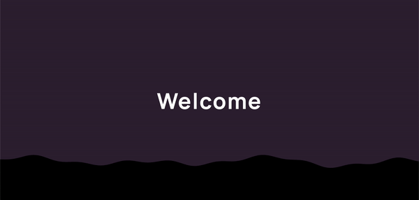

Here are my three favorites.
C++ Chess Engine
- Created a chess GUI with the SFML library
- Implemented the mini-max algorithm with alpha-beta pruning
- Improved search algorithm's speed 600x with profiling & refactoring
- Used bit manipulation to save 90 bytes on each board object

Sudoku Web App
- Developed a modern web app to play Sudoku
- Wrote the backend using express and SQLite
- Client-server connection allows the global high scores to be displayed

This Website
This website is hopefully going to show the best of my front end design. I started programming in JS so there is a special place in my heart for web design. I also wanted a place to host all of my past projects and I did not want to make a repo for every single one.
GitHub Repo This is a link to the page you are on
